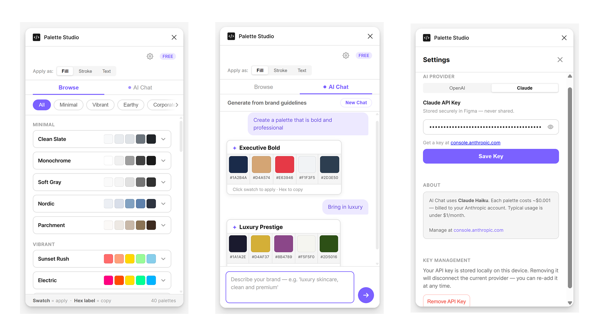

Too many surfaces
Exploration often moved between browser tools, reference images, Figma layers and brand guidelines instead of staying inside the design canvas.
Case study: AI-assisted Figma plugin
Palette Studio started from a practical friction in visual exploration: generating, comparing and applying color palettes required too much context switching. The result is a shipped Figma plugin that combines curated palette browsing with optional AI-assisted generation, giving designers a simple way to explore colors on their own terms.

View live Figma pluginStarting point
The project began during brand color exploration, where the design task was simple in theory: push a palette in a few directions, compare options and apply promising colors to the canvas. In practice, that meant jumping between inspiration sites, palette generators, notes, Figma swatches and manual copy-paste work.
The opportunity was not to replace a designer's eye. It was to remove the slow, mechanical parts around palette exploration so judgment could happen faster.
Exploration often moved between browser tools, reference images, Figma layers and brand guidelines instead of staying inside the design canvas.
Promising palettes still needed to be moved into Figma one color at a time, which slowed down comparison and made the task feel heavier than it should.
AI-assisted generation was useful only if designers could decide when to use it, what provider to connect and whether to rely on curated palettes instead.
Opportunity scan
Before the build moved forward, Claude was used to pressure-test the idea against the Figma plugin ecosystem. The scan surfaced several adjacent tools: AI palette generators, mood-to-palette plugins, dark-mode palette helpers, brand palette generators, browseable palette libraries and utilities for applying colors to selected objects.
That was an important moment in the project. The feature space was not empty, but the gap was not a single missing feature. It was the absence of one cohesive experience that combined palette discovery, conversational refinement and direct application inside Figma.
Generate colors from a prompt, keyword or brand description.
Many use a one-shot output model, with limited support for iterative follow-up such as make it warmer, keep the blue or mute the green.
Help designers scan ready-made or trending palettes quickly.
They are useful for discovery, but do not usually support conversational brand-specific refinement.
Make it easier to apply selected colors to design elements.
They improve execution, but are often separate from generation and exploration.
Bring browsing, AI chat, API-key control and direct application into one workflow.
The differentiator became the combination: designers can explore, refine and apply palettes without switching tools.
The defensible value was the iterative loop: a designer could start with a prompt, review a palette, then refine it conversationally instead of treating AI generation as a one-time answer.
Product direction
The plugin was designed as a complete color-exploration workflow rather than a single-purpose generator. Designers can browse curated palettes, generate new directions through chat, connect their own AI provider, choose whether colors should apply as fill, stroke or text, and apply swatches directly to selected frames or elements.
Palette groups such as minimal, vibrant, earthy and corporate give designers useful starting points when they want fast exploration without prompting AI.
Instead of a one-shot generator, the AI Chat flow supports iterative direction: designers can ask for a mood, review results and continue refining the palette in natural language.
Designers can choose the application target first, then click a swatch. The plugin uses the selection context in Figma to apply the color to the right property.
The Settings screen keeps API setup straightforward, with provider choice, key storage, cost context and a clear option to remove the key later.
AI-assisted, not AI-dependent
Palette Studio uses an API-key setup so designers can connect their own AI provider instead of depending on a platform-managed pool of credits. That choice makes the tool more transparent: the designer decides whether to use AI, which provider to use and when to remove the key.
Figma's native AI availability and credits can vary by plan, rollout and team policy. Palette Studio keeps AI assistance separate from that dependency. Designers can still browse and apply palettes without AI, then bring in Claude or OpenAI when they want a more directed palette exploration.
Select an AI provider from Settings.
Add an API key that stays local to the Figma environment.
Describe the brand direction in plain language.
Use generated swatches directly as fills, strokes or text colors.
Fast and predictable, with no setup cost.
Less responsive to brand-specific prompts.
Convenient when available inside the design tool.
Availability may depend on plan, rollout, admin settings or remaining credits.
Designer controls when and how AI is used.
Requires a one-time key setup, so Settings had to be plain and reassuring.
From idea to plugin
The build was intentionally honest and iterative: a first attempt failed, the scope was reduced to the core workflow, and the plugin moved forward through small pieces of UI, debugging and repeated testing in Figma. The important portfolio story is not that AI wrote code; it is that AI helped a designer cross the gap from product idea to shipped tool.
A recurring color exploration task exposed the need for a tool that lived inside Figma.
The first direction tested whether a compact plugin could browse palettes and apply colors quickly.
AI Chat was added as an optional way to turn brand prompts into palette directions.
The plugin was packaged, submitted and released through Figma Community review.
Because the plugin runs inside Figma, the UI needed to stay small, predictable and action-oriented. Tabs, segmented controls and swatches do most of the work.
The project required reading plugin code, testing behavior inside Figma and using Claude to understand errors without treating AI output as automatically correct.
What shipped
The final plugin gives designers two modes of exploration: browse when they want fast, low-friction palettes, and AI Chat when they want palette ideas shaped by a prompt. Settings make the AI layer understandable by showing the provider, key status, cost note and removal option.
Palette groups such as minimal, vibrant, earthy and corporate help designers start from a direction instead of a blank color picker.
Designers can ask for palette qualities such as bold, professional or luxury and evaluate generated swatches immediately.
The API key workflow makes AI optional, explainable and removable, which supports trust without adding unnecessary setup complexity.
The most valuable outcome was confidence: a designer can identify a workflow problem, use AI as a collaborator, make product decisions and ship a practical tool to a real design community.Read the original build story